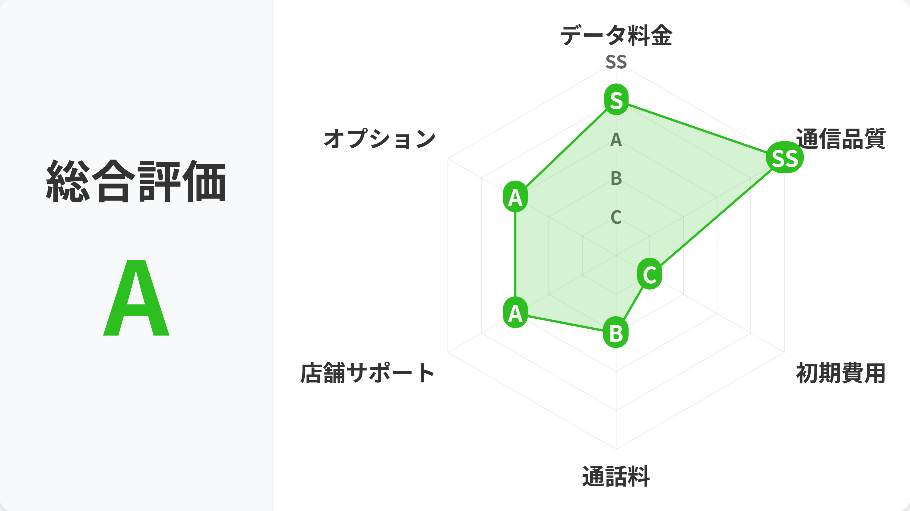
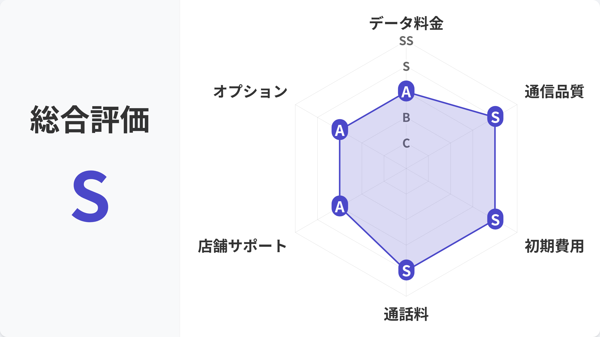
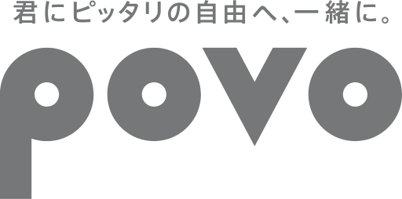
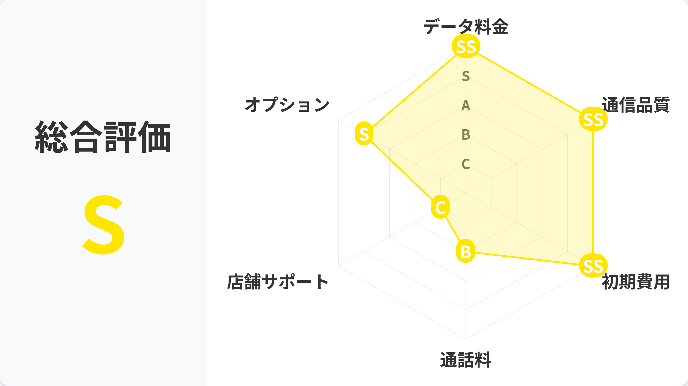

過去動画もチェック

LINEMOの解説動画
LINEMOの解説動画も
チェック！
チェック！
衛星通信の条件や設定をさらに詳しく

| 月額料金 | 3GBまで990円・10GBまで2,090円、LINEMOベストプランVは30GBで2,970円 |
|---|---|
| 衛星通信の料金 | 衛星通信：月額そのまま（対象プラン） |
| 申込条件 | 2026年冬（予定）までは申し込みが必要 |

| 月額料金 | 40GBまでの枠で月額3,135円（税込）〔2026年12月1日〜〕。設定した利用量上限に達しても最大1Mbpsの速度で使い続けられる |
|---|---|
| 衛星通信の料金 | 衛星通信：当面、追加料金なし・申し込み不要 |



| 月額料金 | 基本料0円で、使う分だけ買えばいい |
|---|---|
| 衛星通信の料金 | 衛星通信：専用プラン+ 月額1,650円 |
| 申込条件 | 申し込み月から3カ月0円 |

| 対象 | 月額 |
|---|---|
| povo2.0・他社回線 | 1,650円 申込月から3カ月0円 |
| UQ コミコミプランバリュー ・トクトクプラン2 | 0円 |
| UQ その他のプラン | 4カ月目から550円 |
| 初期費用 | 4,950円 |
|---|---|
| au Online Shop | 3,850円 |
| 還元条件 | au PAY残高で還元 1名義につき1回のみ |
| Y!mobile | シンプル3M 30GB・4,378円 |
|---|---|
| UQ mobile | コミコミプランバリュー 35GB・3,828円 |
| 条件 | 割引なしの月額目安 |
| 会社 | 少なめ（3GB前後） |
|---|---|
| ahamo | 3,135円（40GBまで）〔2026年12月1日〜〕 |
| LINEMO | 990円 |
| povo2.0 | 2,640円（3GB 990円＋専用プラン+ 1,650円） |
| UQ mobile | 2,948円（トクトクプラン2・5GB・割引なし） |
| 会社 | 多め（30GB前後） |
|---|---|
| ahamo | 3,135円（40GBまで） |
| LINEMO | 2,970円（ベストプランV） |
| povo2.0 | 4,430円（30GB 2,780円＋専用プラン+ 1,650円） |
| UQ mobile | 3,828円（コミコミプランバリュー・35GB・割引なし） |